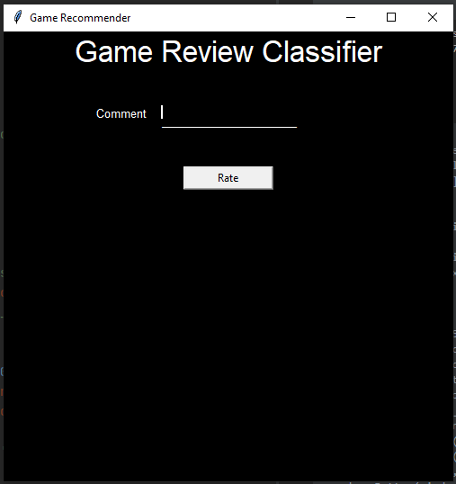

Game Review Classifier
Github
Introduction
Data mining is a process of finding patters and correlations in large datasets to predict the outcomes using wide range of techniques like machine learning, statistics and databases.
The goal of this project is - Given a Game review predict if its a Positive or Negative review.
The dataset used is a Steam Game Review Dataset. As we see the gaming community is growing really fast and during this pandemic the steam had its highest usage hit. As I am one of the contributor in its usage I decided to take this dataset.
This dataset has a lot of scope for future developments as there are lots of games linked to it. If we consider 1 particular game and take the games data it would allow us to explore a larger dataset and also build models that can predict the way players play and also the outcome of the games based on the data extracted from the game
The Game Review Dataset has the Reviews, Recommendations which helped me in training the model and build the classifier
The process followed is Data Preprocessing --> Data Visualization --> Data Cleaning --> Building Classification Model
In the preprocessing step we checked for the null and duplicate values which could have affected our classifier and deleted all those rows. In the visualization step we were able to look at the data in different perspectives which helped me in understanding the data better. In the data cleaning step I converted all the reviews in the datasets into lower case and also removed all the special characters from it as they would affect the model and also assigned integer to the recommendation column so it would make it easier to move further.
The reviews posted are text data we have to convert them into TFIDF form
tf-idf(t, d) = tf(t, d) * idf(t),
and the idf is computed as
idf(d, t) = log [ (1 + n) / (1 + df(d, t)) ] + 1
Model Building
I have used Multinomial Navie Bayes, Support Vector Machine, Random Forest Classsifier as these are text classifiers
Out of these SVM gave me the best accuracy.
Why?
As mentioned above steam has a lot of scope and this review classifier can help me in further building the game recommender. As steam has millions of user who are trying out new games everyday people will be looking for recommendations so this app can help them select the right game. This classifer acts as the starting point of the recommender which can further be developed into complete working application
- Similar Applications
- https://store.steampowered.com/recommender/76561198204009015
- https://apps.quanticfoundry.com/recommendations/gamerprofile/videogame/
- https://tastedive.com/games
- GUI Screenshots
- 
- Challenges
- Analyzing and visualizing huge amount of data(data in 400k approx) was a difficult task and also getting a good accuracy was also a challenge for me I was able to push it to 85% at last. I was able to over come these challenges with the help of the references and also by trying out hyper parameters to the model.
- Contribution
- Apart from the references I tried to combine 2 models to form a ensemble but the accuracy didnot improve much it was similar to what SVM gave me and also visualized data using different graphs and approches to understand data better.
- Experiments and findings
- I tried to implement this using 3 trypes of models that is Multinomial Naive Bayes, Support Vector Machine, Random Forest Classifier. Where SVM gave me the best accuracy out of all those and I also tried combining 2 model this also gave me an accuracy similar to what SVM gave me. Data Visualization and graphs helped in refining and fine tuning the data better.
- I even tried different hyper parameter tuning by trying different C values for SVM and different alpha value for Naive Bayes were some of them improved my accuracy and some of them decreased it.
- While doing hyper parameter training the SVM accuracy for c=100 and c=1000 we can see that the accuracy values are almost the same by which we can say that the data is overfitted when we give c=1000.
- Basic Algorithm
- Classifiers used.
- 1. Multinomial Naive Bayes
- 2. Support Vector Machine
- 3. Random Forest Classifier
- Multinomial Naive Bayes is based on bayes theorem that works in text prediction and analysis. It works on the following formula P(A|B) = P(A) * P(B|A)/P(B)
- (B) = prior probability of B. P(A) = prior probability of class A. P(B|A) = occurrence of predictor B given class A probability. This formula helps in calculating the probability of the tags in the text.
- Support Vector Machine is a supervised learning model that analyses data for classification and regression. Here we seperate the data by selecting the best possible hyper plane out of all the possible ones
- Random Forest Classifier is an ensemble learning method for classification, regression that fits a number of decision tree classifiers on various sub-samples of the dataset and uses averaging to improve the predictive accuracy and control over-fitting
- References
- https://www.kaggle.com/luthfim/steam-reviews-dataset
- https://www.kaggle.com/bugonort/steam-reviews-classifier-with-bert
- https://www.kaggle.com/ravehorn/cs-go-navi-win-loss-predicting
- https://github.com/AlbertNightwind/Steam-recommendation-system/blob/master/RecommendationSystem_Part2.ipynb
- https://github.com/AlbertNightwind/Steam-recommendation-system
- https://medium.com/@vasista/sentiment-analysis-using-svm-338d418e3ff1
- https://satyam-kumar.medium.com/imdb-movie-review-polarity-using-naive-bayes-classifier-9f92c13efa2d
- https://www.geeksforgeeks.org/applying-multinomial-naive-bayes-to-nlp-problems/
- https://scikit-learn.org/stable/modules/generated/sklearn.naive_bayes.MultinomialNB.html
- https://scikit-learn.org/stable/modules/generated/sklearn.ensemble.RandomForestClassifier.html